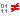
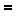

At various times, Beyond Compare performs a content comparison on a pair of files to determine if they match.
Content comparison methods
CRC comparison compares CRC values. A CRC (Cyclic Redundancy Check) is a numeric representation of the contents of a file. If the CRCs of two files are different, then the contents of those files must be different. If the CRCs match, then it is likely (but not absolutely certain) that the contents match. When comparing two versions of the same data, you can be reasonably confident that they are exactly the same if their CRCs match.
Binary comparison compares files byte-by-byte.
Rules-based comparison compares files based on their file format associations. It allows you to define unimportant differences, such as changes in whitespace or source code comments. A rules-based comparison can also ignore differences in file encoding or line endings.
Results of content comparisons
CRC and Binary comparisons return one of these results:
|
Binary same |
The files are exactly the same. |
 |
Binary differences |
At least one byte is different between the files. |
Rules-based comparisons have a built-in binary comparison and return one of these results:
|
Binary same |
The files are exactly the same. |
 |
Rules-based same |
The files have binary differences, such as character encoding, that can be ignored. |
|
Unimportant differences |
A rules-based comparison found only unimportant differences. |
|
Important differences |
A rules-based comparison found important differences. |
When content comparisons are performed
Content comparisons are performed:
| • | when a Folder Compare or Folder Sync session is loaded, and its session settings call for automatic content comparisons |
| • | explicitly, when the Compare Contents |
| • | when a pair of files is opened in a file session |